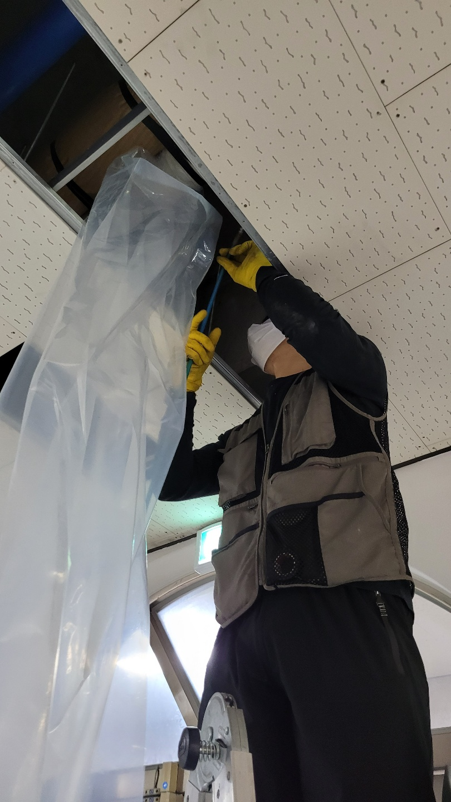
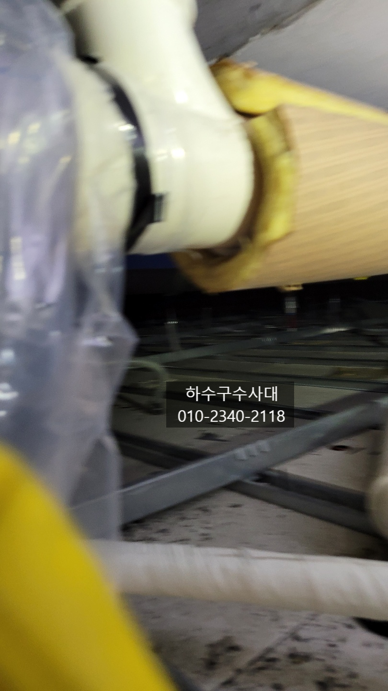
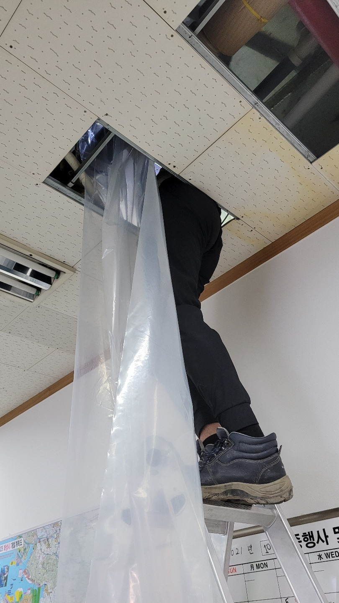
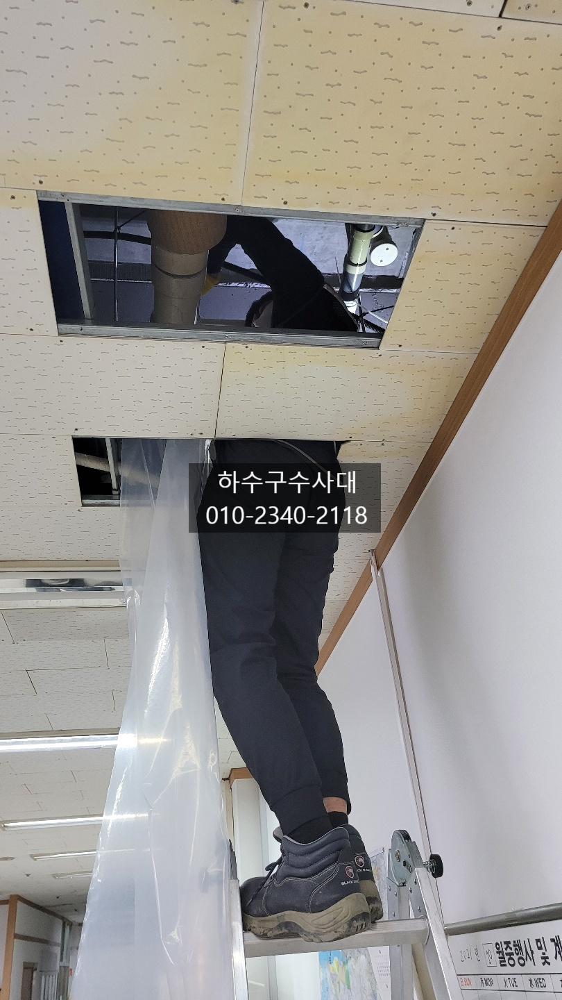
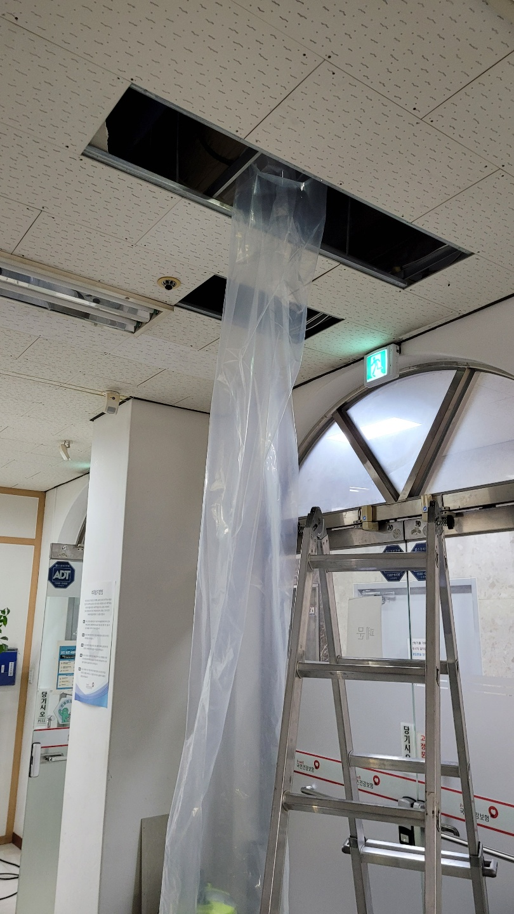
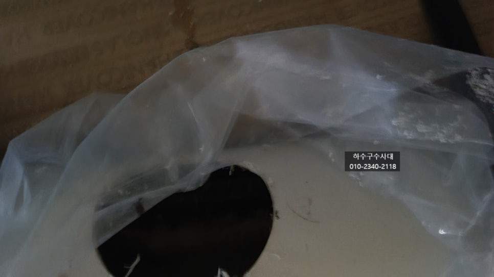
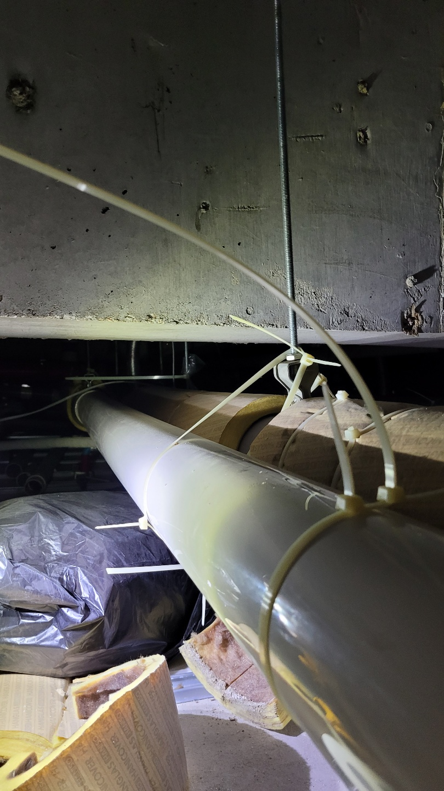
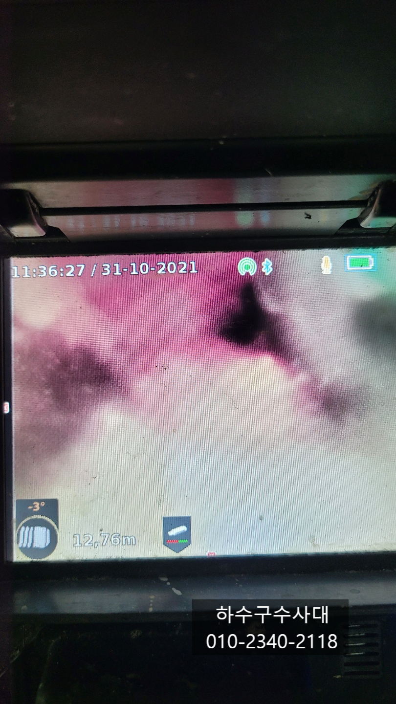

🏠 병점하수구막힘 배관청소방법 배관막힘누수
서울 병점 하수구막힘 전문 시공 후기

📋 작업 개요
- 위치: 서울 병점, 병점, 서울
- 서비스 유형: 하수구막힘, 배관막힘, 누수수리, 역류해결, 뚫는업체, 배관청소, 고압세척
- 작업 일시: 2021. 10. 31. 23:33
- 업체명: 하수구수사대 (010-5615-2118)
🔍 문제 상황
병점하수구막힘 배관청소방법 배관막힘누수
안녕하세요!
오늘현장은 4층은 병원이고 3층은
국민건강보험센터였는데 병원화장실에서 물을 많이쓰면
3층사무실로 누수가 되고 있는 상태였습니다.
배관청소를 10년간 한번도 안해서
배관내부상태가 좋지 않을것으로 판단도 되고
병원환자분께서 화장실에서 화분갈이?를
하여 모래가 들어갔을것으로 원장님께서
말씀하셨습니다.
간혹 아파트베란다에서 화분갈이를 하다
배관으로 흙을 흘려보내 1층에서 물이
역류하는 현장도 있는데 흙은 절대 배관으로
들어가면 안되니 주의하시는것이 좋겠습니다.^^
병점하수구막힘 배관청소방법 배관뚫기
4층배관이 3층천장에 위치하기때문에 텍스를
열어 작업을 해주었는데요 작업도중 배관에서
물이 흘러넘쳐 바닥에 떨어지는걸 방지하게위해
보양비닐도 철저하게 사전준비를 해야해요.

🔎 원인 분석
💡 전문가 진단: 하수구수사대010-2340-2118
사다리에 올라가서 하는 작업이라 위험할수도
있어 안전 또 안전에 우선시 되야하기때문에
항상 조심해야합니다.
작업할 공간에 보양비닐작업을 모두 마쳤는데요
물이 안넘치게 작업을 하겠지만 작업을 할때는
항상 변수라는게 있기때문에 충분한 사전준비가 필요합니다^^
배관이 20m정도 되다보니 전체적으로 구배가
좋지않은걸 눈으로 확인할수가 있었습니다.
구배가 좋지않으면 배관에 물이 고여 기름기가 조금씩쌓이고
덩어리가 되는 경우가 많습니다.
물론 굉장히 오랜기간이 걸리지만 기름덩어리가
한번 생기게되면 자연적으로 없어지지 않습니다.
장기간 쌓인 기름이 덩어리가 되어 배관구멍을 좁게만들다보니
많은 물을 쓰게되면 역류를 하는 증상으로
배관을 청소하는작업을 진행하였습니다.
배관에 타공을 해보니 90% 물이 차있고
내시경카메라로 기름덩어리가 많은것이 확인되었습니다.
기름덩어리가 많아 내시경카메라 진입조차 안되는
상황이라 우선 뚫는 작업을 진행하였습니다.
뚫지 않고 배관청소먼저 진행하도 되긴 하지만

🔧 작업 과정
배관청소도중 기름덩어리로 때문에 막힘 증상이
발생하면 물이 역류할수 있게때문에
뚫는 작업을 진행하는게 좋습니다.
아무래도 사무실이다 보니 복사기,전화기,컴퓨터 등등
사무전자기기가 많아 물이 떨어지면 고장이 날수
있기때문에 최대한 물이 떨어지지 않게
작업을 진행하여야합니다.
화장실에서 화분갈이를 해서그런지 흙도 제법 보이는데
모두 제거하는게 좋습니다. 흙도 물에 잘 흘러나가지 않기때문에
물이 고일수있는 원인이 되기도 합니다.
하수구수사대
010-2340-2118
어느 정도 배관도 뚫고 청소가 되어
물이 흘러나가는 것을 확인할수 있습니다.
배관에 기름기가 붙지않게 하기위해서는
펑크린같은 배관세정제를 써주면 좋은데요
배관세정제는 기름들을 용해시키고 살균효과까지 있어
악취도 잡아주기 때문에 가정이나 사무실등 에서도
배수관에 부어주고 30분이상 지나고 물을
흘려보내주면 충분한 효과를 보실수 있어요.,
주기적으로 사용해주시는게 더 좋습니다^^
배관청소방법 중에 고압세척도 있는데
배관에 붙어있는 기름덩어리와 이물질을 고압으로
쏴주어 모두 제거하는 작업으로 뚫는 작업과 청소를
한번에 할수있어 두가지 효과를 볼수 있습니다.
내시경카메라를 통해 배관이 깨끗해서 맑은
물이 나가는 것을 확인 할수가 있는데요
펑크린세정제로 지속적인 관리를 하고 물을
충분히 흘려보낸다면
청소상태대로 유지가 될것입니다^^
4층에 병원원장님께서 3층 국민건강관리공단에 본의


✅ 작업 완료
아니게 피해를 줘서 미안해 하셨는데
완벽하게 해결되서 속이 시원하다고 하시면서
앞으로 하수구배관에 좀더 신경써서 관리를
하시겠다고 하셨습니다^^
저희 하수구수사대는 원인부터 해결까지
완벽하게 처리하는것을 선호합니다.
서울,경기,인천 전지역 방문가능하오니
언제든지 연락 주세요^^




⚠️ 베란다 누수 및 방수 관리 방법
- ✅ 비가 많이 올 때 창틀 주변이나 아래층 천장에 얼룩이 생기는지 정기적으로 확인해 보세요.
- ✅ 우수관 주변 실리콘 마감이 들뜨거나 깨진 틈새가 있는지 손상 여부를 수시로 체크하세요.
- ✅ 베란다 바닥 타일의 줄눈(메지)이 소실되면 그 틈으로 물이 침투하여 누수가 유발됩니다.
- ✅ 누수 의심 증상 발견 시 방치하면 아래층 손실이 커지므로 즉시 전문가의 진단을 받으십시오.
💡 핵심 정리
- 확실한 장비 작업(내시경 점검 및 샤프트 스케일링)으로 원인을 뿌리 뽑습니다.
- 작업 후 1년 이내에 동일한 부위 재발 시 100% 무상 A/S 서비스를 보장합니다.
- 서울 · 경기 · 인천 전 지역에 24시간 언제든 긴급 출동할 수 있도록 항시 대기 중입니다.
❓ 자주 묻는 질문 (FAQ)
🚨 서울 병점 하수구막힘 문제로 고민이신가요?
정확한 원인 진단과 확실한 시공으로 재발 없는 해결을 약속드립니다.
24시간 긴급 출동 | 서울 · 경기 · 인천 전지역 | 1년 내 재발 시 무상 A/S